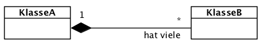
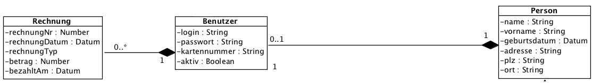

{% extends "../_base_template.html" %}
{% block title %}Lektion 10 - Assoziationen - Kompositionen{% endblock %}

{% block sections %}
<section data-markdown>
<textarea data-template>
<i class="fas fa-flask"></i> Besprechung Hausaufgaben Assoziationen
=============================

TODO

</textarea>
</section>

<section data-markdown class="bigger-2">
<textarea data-template>
<i class="fas fa-graduation-cap"></i> OOD - Implementation von Kompositionen
=============================

Heutiges Ziel
-------------

* Sie wissen, was Kompositions-Beziehungen sind
* Sie können Kompositionen in Java implementieren
* Auslosen der Design-Pattern für Kurzpräsentation/Merkblatt

### Hausaufgaben

* Fertigstellen der Kompositions-Übungen

</textarea>
</section>

<section data-markdown data-separator-notes="^Note:" class="bigger-2">
<textarea data-template>
<i class="fas fa-graduation-cap"></i> Kompositionen
===========

Wir haben letztes Mal verschiedene Beziehungen kennengelernt:

* one-to-many (1:n)
* one-to-one (1:1)
* many-to-one (oder belongs-to, n:1)
* many-to-many (n:m)

Wir schauen uns heute die **Kompositionen** an. Kompositionen sind ein
Spezialfall der one-to-many-Beziehung. Nämlich?



<!-- .element class="fragment" -->Bei **Kompositionen** ist das Ganze (one)
verantwortlich für die Existenz und Speicherung seiner Teile (many).
Sie beschreibt, wie sich etwas Ganzes aus Einzelteilen zusammensetzt und diese
kapselt.

</textarea>
</section>


<section data-markdown data-separator-notes="^Note:" class="bigger-2">
<textarea data-template>
<i class="fas fa-graduation-cap"></i> Kompositionen
===========

Bei **Kompositionen** ist das Ganze (one) verantwortlich für die Existenz und Speicherung seiner Teile (many).

Wie setzen Sie dies nun in Java um?

Versuchen Sie, in den nächsten Minuten eine Implementation zu folgendem Problem zu finden:

* KlasseA ist die "Ganze" (one)-Klasse einer Komposition
* KlasseB ist die "Teile" (many)-Klasse einer Komposition
* KlasseA stellt folgendes sicher:
  * Sie kann ihre Teile erzeugen
  * Sie kann ihre Teile ausgeben / zurückliefern
  * Sie kann ihre Teile löschen
  * wenn KlasseA gelöscht wird, werden auch ihre Teile gelöscht
* Erstellen Sie ein Java-Programm, welches diese Anforderungen demonstriert!

</textarea>
</section>

<section>
    <section data-markdown class="bigger-2">
    <textarea data-template>
    <i class="fas fa-flask"></i> Design Patterns: Auslosung
    =============================

    Nach den Pfingstferien werden Sie eine Kurzpräsentation / Merkblatt
    zu einem **Design Pattern** erstellen. Wir werden nächstes Mal sehen, was Design Patterns
    sind. Damit Sie sich bereits mit "Ihrem" Design Pattern beschäftigen können, losen
    wir heute die Patterns aus:

    * Singleton
    * Factory Method
    * Observer/Observable
    * Adapter
    * Strategy

    </textarea>
    </section>
</section>

<section>
    <section data-markdown>
    <textarea data-template>
    <i class="fas fa-flask"></i> Hausaufgaben
    =============================

    Übungen zu Aggregationen
    * Implementation der Komposition **"Person - Benutzer"**: eine Person hat max. 1 Benutzer. Der Benutzer wird über die Person verwaltet.
    * Implemenation der Komposition **"Benutzer hat Rechnungen"**: Einem Benutzer können mehrere Rechnungen zugewiesen werden.
    * Durchgängige Verwaltung: Beim Löschen der Person müssen Benutzer und deren Rechnungen mit gelöscht werden.

    

    </textarea>
    </section>
</section>
{% endblock %}
